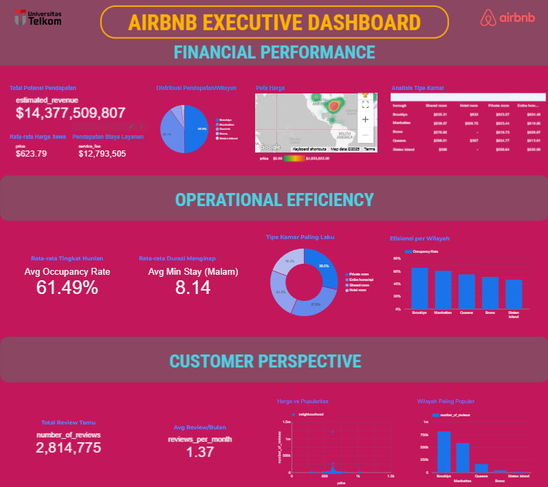
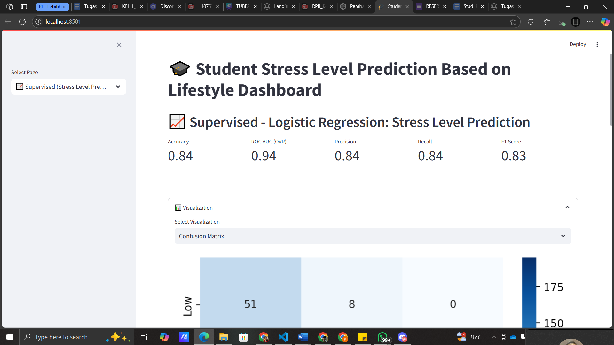
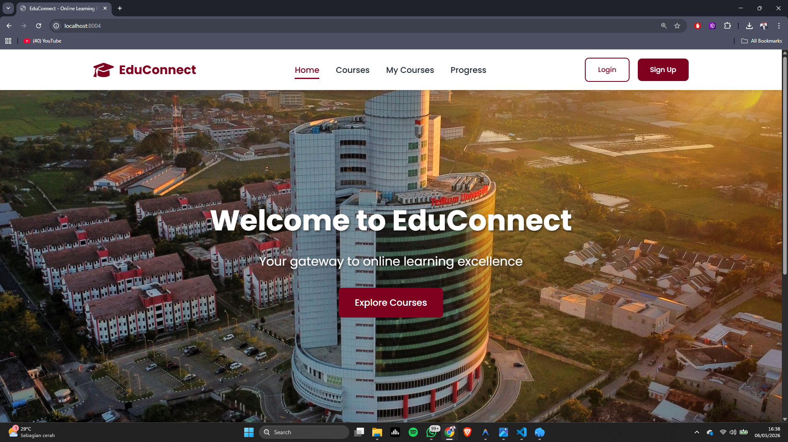
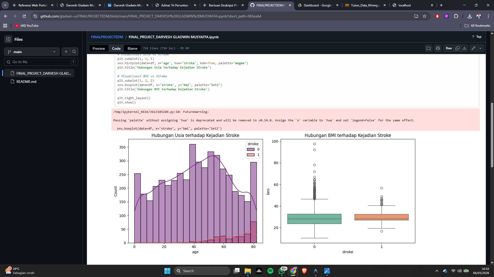
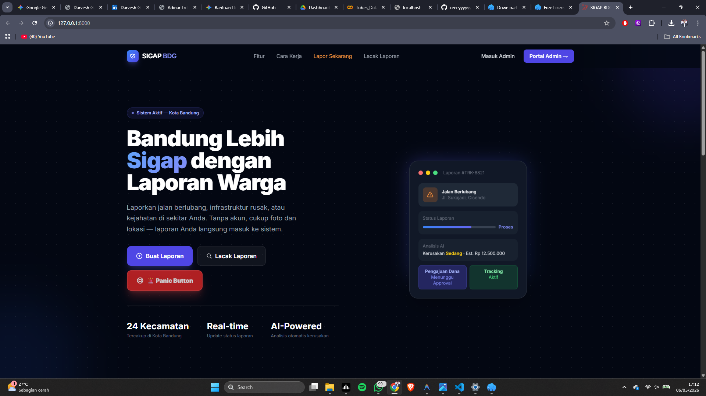
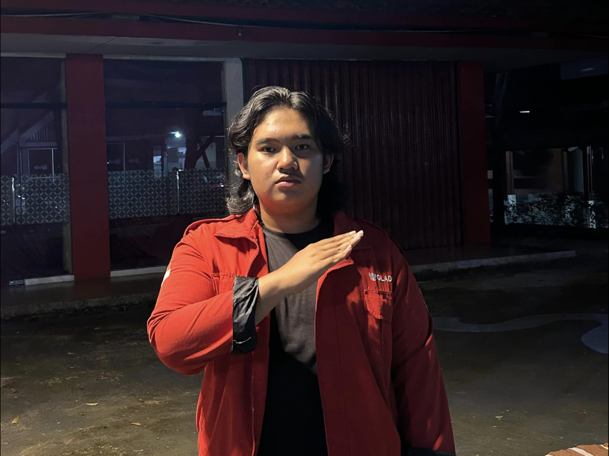

Data Visualisation
Business Intelligence & Data Analytics project analyzing Airbnb data using ETL pipelines, machine learning, and interactive Looker Studio dashboards.
Hello, I'm
Mahasiswa S1 Sistem Informasi — Telkom University
6th-semester Information Systems undergraduate at Telkom University focused on Data Analytics and Data Science. Experienced in organizational leadership and national tech competitions, striving to create impactful, data-driven solutions.

Business Intelligence & Data Analytics project analyzing Airbnb data using ETL pipelines, machine learning, and interactive Looker Studio dashboards.

EcoSmart.AI is an IoT waste management system that earned Runner Up (2nd Place) at Hackathon EISD 2025. It leverages deep learning for automated waste sorting and gamification to incentivize sustainable disposal habits.

An interactive machine learning dashboard that predicts student stress levels and categorizes lifestyle patterns using Logistic Regression and K-Means clustering to provide data-driven insights into student well-being.

A scalable Course Management System built on a microservices architecture, featuring a centralized API Gateway and specialized services for user management, course enrollments, and real-time academic progress tracking.

A comprehensive Enterprise Data Management (EDM) project focused on architecting scalable data infrastructures and implementing governance frameworks to ensure data integrity and organizational efficiency.

A comprehensive citizen reporting and monitoring platform for Bandung city that streamlines infrastructure and crime incident management through AI-driven analysis and integrated budget tracking.

APTRG Laboratory — Telkom University
As the Team Manager for Raven APTRG during the KRTI 2024 competition, I was responsible for the strategic planning and operational execution of our VTOL drone project. My role involved bridging the gap between technical requirements and project milestones, ensuring that every subsystem—from propulsion to autonomous navigation—aligned with the competition's rigorous standards. I focused on fostering a collaborative environment, managing technical risks, and maintaining high performance under the high-pressure environment of a national-level robotics competition.

APTRG Laboratory — Telkom University
In 2025, I had the privilege of managing Team Bangau in the Fixed Wing category for KRTI. Managing a Fixed Wing project requires a deep understanding of flight dynamics and systems integration. My role was to synchronize the efforts of the design and programming sub-teams to ensure our UAV could execute autonomous missions with maximum reliability. Beyond the technical aspects, I focused on building a resilient team culture that could handle the high-pressure environment of national competitions, ultimately resulting in our team qualifying as national finalists.

APTRG Laboratory — Telkom University
Serving as the Non-Technical Division Coordinator, I strategically led the administrative and public relations pillars, overseeing a multidisciplinary team to manage the laboratory’s brand and digital presence. I directed end-to-end administrative workflows and certification processes with high precision, while optimizing resource management to support the laboratory's technical research and competition objectives.

APTRG Laboratory — Telkom University
As the Secretary of APTRG Laboratory, I authored research and funding proposals while managing formal correspondence between laboratory members and university administration. I maintained high standards for technical and administrative writing, ensuring 100% institutional compliance and streamlining project approval processes to support laboratory operations.

Enterprise Data Management Laboratory — Telkom University
Orchestrated departmental events and designed data competitions while managing participation tracking at Telkom University’s EDM Laboratory. I balanced organizational leadership with technical responsibilities, conducting data-driven research and implementing machine learning and data analysis tasks to support the laboratory's research-focused environment.
Tertarik untuk bekerja sama atau ingin berdiskusi? Jangan ragu untuk menghubungi saya melalui salah satu kanal berikut.